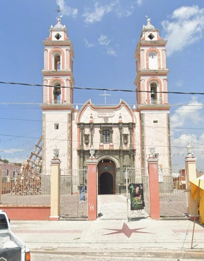
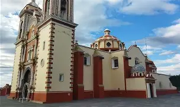
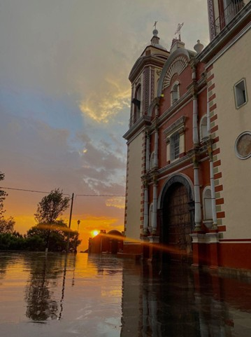
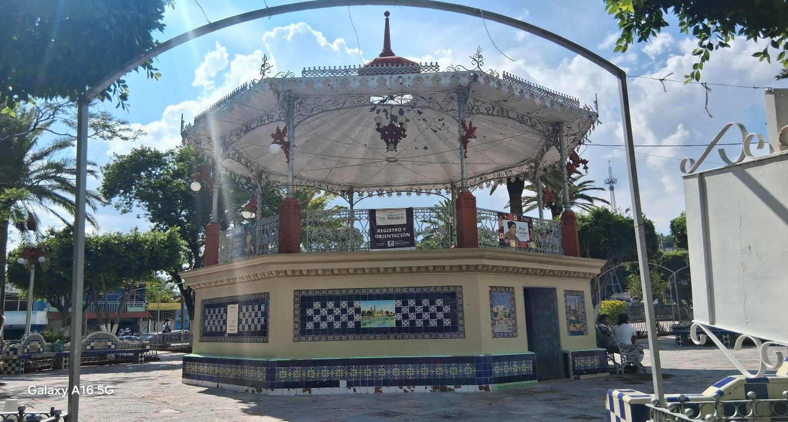

PARROQUIA
En el municipio de Tlacotepec de Benito Juárez, Puebla, se erige un templo que funciona como epicentro de la fe y la tradición local, conocido formalmente como la Parroquia de la Santa Cruz. Sin embargo, es más célebre por albergar la venerada imagen del Señor del Calvario, un Cristo negro cuya historia y milagros atribuidos lo han convertido en un importante punto de peregrinación. Este recinto no es solo una edificación religiosa, sino un complejo espiritual que fusiona historia, devoción y una activa vida comunitaria.

CALVARIO
Cerrito El Calvario es un importante centro religioso y turístico ubicado en Tlacotepec de Benito Juárez, en el sureste del estado de Puebla. Su santuario destaca tanto por su profundo arraigo devocional como por su riqueza arqueológica y natural. ORIGEN PREHISPÁNICO: La iglesia del Señor del Calvario fue edificada sobre la base de una pirámide popoloca con más de 2,000 años de antigüedad.
EL CRISTO NEGRO: En el interior del templo se venera la milagrosa imagen del Señor del Calvario, un Cristo de color oscuro al que acuden cientos de peregrinos de toda la República Mexicana. Es común que los fieles suban las escalinatas como manda para pedir favores, especialmente para la lluvia en sus cultivos.
LA SANTA ESCALA: Para llegar a la cima se recorre una calzada que comienza con un arco triunfal en el zócalo. Consta de más de 140 escalones que representan la vía dolorosa de Jesucristo.


PARQUE
El nombre Tlacotepec proviene del náhuatl y se compone de tres raíces: tlaco (mitad o en medio), tepetl (cerro) y c (en o lugar). El significado más aceptado es “En la mitad del cerro” o “Lugar entre cerros”.
El parque principal de Tlacotepec de Benito Juárez, Puebla, es el corazón social del municipio, caracterizado por su ambiente familiar, áreas verdes y cercanía con el palacio municipal. Funciona como punto de reunión céntrico, tradicionalmente adornado por el quiosco local y cercano a la iglesia, siendo un lugar clave para las actividades sociales y ferias locales.

TEMA DE INGLÉS
Espacio destinado al tema de inglés relacionado con los lugares y patrimonio cultural del municipio.
REFERENCIAS BIBLIOGRÁFICAS
TEXTOS:
- https://www.facebook.com/share/r/1BYTX4u2FC/
IMÁGENES:
- La principal imagen del parque fue tomada por Jessica Rojas Vázquez.
- Recursos visuales: https://www.facebook.com/share/v/1Cu3ZXtDKb/